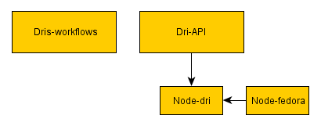

About TCHPC
[Matthias] Trinity Centre for High Performance Computing, providing compute, data management and visualization services.They also participate in European research projects and provide consulting services to private industry.
Context
For who and why?
-
Librarians in Trinity College
-
Preserve historical and valuable data
-
Doing everything manually:
-
file management
-
generation of metadata xml from a database
-
running scripts
Context
-
Preservation
-
Example: 9th century
Context
We want to preserve one book
Context
A few terms
-
Collection (for example section of books)
-
Series (Books from the same author)
-
Item (Book itself or the pages of that book)

We started off with
-
A single Node.js application
-
Fedora Commons as preservation storage
[Quirijn] writing scalable Internet applications; Used Fedora as backend;
But then we realised
-
Our code wasn't very maintainable
-
You couldn't easily develop other front-ends
[Quirijn]
So we decided to
-
Make a clear differentiation between the front- and back-end
-
Create a consistent developer friendly API
-
Create a front-end using said API
-
Treat Fedora Commons as a blackbox
-
Use a database to store and deliver content for the API
[Quirijn] Fedora purely as preservation; MongoDB explain document-oriented NoSQL database system.
The initial idea
-
Interface to Fedora-commons
-
Cross domain issues
-
PHP proxy
-
Not such a good idea
[Quirijn]
Using the rest api of Fedora; cross domain issues, php proxy
Structure
-
Multiple reusable npm packages
-
dri-api
-
dris-workflows (front-end application)
-

[Quirijn]
Functions of the API
-
Create
-
Read
-
Update
-
Delete
-
Expose reporting numbers
-
Communicating with Fedora Commons
[Quirijn]
Possible features
-
Command line applications
-
More exporting options for metadata
-
Post processing
-
Surrogate creation
-
Watermarking
-
Video transcoding
-
Apache SOLR
-
Authentication & authorisation